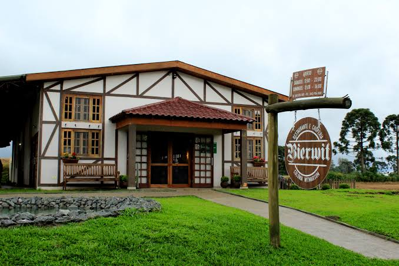

Santa Catarina · Brasil
Conheça Witmarsum
Uma joia da colonização alemã no sul do Brasil. Tradição, cultura e hospitalidade em cada esquina.

- 1962Ano de emancipação
- 3.998Habitantes · IBGE
- 152 km²Área do município
- 370 mAltitude
Witmarsum é um município encantador localizado em Santa Catarina, fundado em 1951 por imigrantes alemães. Seu nome significa "morro da vitória", refletindo a conquista dos primeiros colonos que construíram aqui uma comunidade vibrante, preservando a cultura germânica através da culinária, festas tradicionais e o dialeto Hunsrückisch. Venha descobrir história, natureza e o calor humano de Witmarsum.